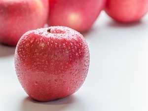

Golden apples in the morning, poisoned apples in the evening? There are 2 best times to eat apples, and many people realize it later
-
1. "Golden apples in the morning, poisonous apples in the evening"?
In our diet, fruits are often the main source of vitamins A and C, and eating fruits can supplement dietary fiber and maintain electrolyte balance. However, we often hear the saying that eating apples in the morning is gold and eating apples in the evening is poison. Expert analysis, the reason for this statement is that the nutritional value of eating fruits in the morning is higher, and the nutritional value of eating fruits at night is lower, but this understanding is unscientific.
From a nutritional point of view, apples contain a lot of sugar, in the morning people are generally in a state of hunger, the sugar supplied to the brain is depleted, at this time to eat apples can quickly supplement sugars, and apples contain nutrients and vitamins in the morning are easy to be absorbed, eating apples on an empty stomach is also conducive to digestion.
However, from a digestive point of view, people with stomach problems are not suitable for eating fruit on an empty stomach. Eating apples at night doesn't mean it's bad, and apples aren't poisonous just because they are eaten at night. On the contrary, eating apples at night, our stomach can still be well digested and absorbed, for people who need to stay up late and need to eat supper, it is healthier to replace supper with apples.
2. Tap water can not be drunk directly, apples cannot be eaten directly, why can apples washed in tap water be eaten?
We all know that apples need to be washed before they can be eaten, but tap water cannot be drunk directly, why can apples washed with tap water be eaten?
This question seems difficult to answer, but in fact, the reasoning is not rigorous, because drinking tap water directly is very different from washing the residual water of apples. In China, tap water has not yet reached the standard of direct drinking water, so it cannot be drunk directly, and it needs to be boiled before drinking, otherwise there will be a risk of infection by pathogens. After washing the apple, a certain amount of tap water will remain on the surface of the apple, although pathogens may be ingested, but the residual tap water is very small, almost negligible, and the tap water can also take away the dust, pesticides, etc. remaining on the surface of the apple after washing.